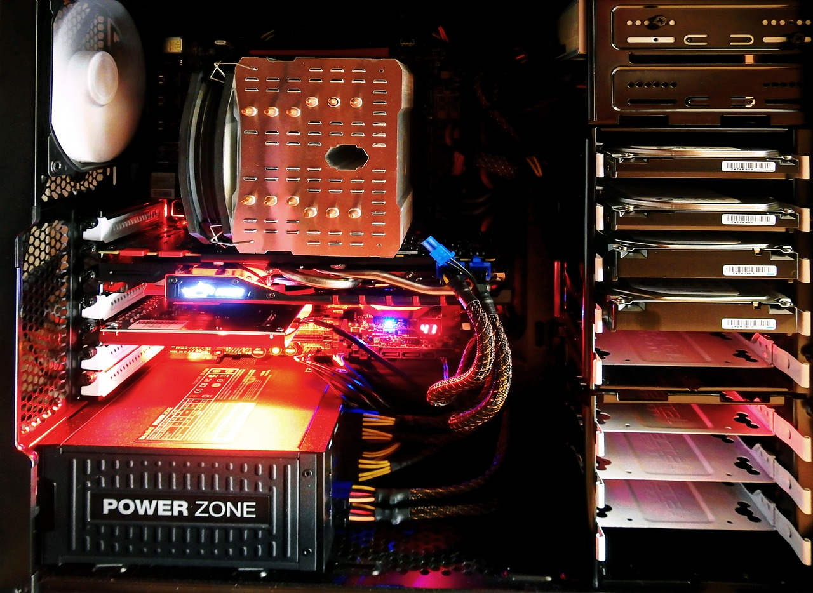

PCs / PC Komponenten
PC-Komponenten sind die Bausteine eines jeden Computers und spielen eine entscheidende Rolle bei der Leistungsfähigkeit und Funktionalität eines Systems. Diese Hardware-Komponenten reichen von Prozessoren und Grafikkarten bis hin zu Speichermodulen und Massenspeichern.
Über PCs
Ein PC, oder Personal Computer, ist ein allgemeiner Begriff für einen digitalen Rechner, der von Einzelpersonen oder Unternehmen für verschiedene Aufgaben verwendet wird. PCs sind vielseitige Computer, die für eine breite Palette von Anwendungen verwendet werden können. Sie können für Büroaufgaben, Gaming, Grafikdesign, Programmierung, Internetzugang und vieles mehr eingesetzt werden. Sie sind oft erweiterbar, was bedeutet, dass Benutzer Hardwarekomponenten aufrüsten oder austauschen können, um die Leistung oder die Funktionalität ihres Systems zu verbessern.
Die Vorteile eines PCs ist die Leistungsfähigkeit, Anschlussvielfalt, Anpassungsfähigkeit, Leistungsfähige Software usw. In beruflichen und wissenschaftlichen Umgebungen sind PCs unverzichtbar und bieten leistungsstarke Tools wie 3D-Modellierung, Datenanalyse, Softwareentwicklung usw. Ebenfalls bieten PCs auch verschiedene Sicherheitsmassnahmen und -software, um vor Viren, Hackerangriffen und anderen Bedrohungen geschützt zu sein.
PC Komponenten
PC Komponenten sind die individuellen Hardwareteile, um die Funktion und Leistung des Computers zu ermöglichen.
- Prozessor (CPU) --> führt alle Berechnungen und Aufgaben aus
- Arbeitsspeicher (RAM) --> der temporäre Speicher für Programme und Daten
- Grafikkarte (GPU) --> Verarbeitung von Grafiken undn Videos verantwortlich
- Mainboard --> verbindet alle Komponenten miteinander und bietet Anschlusse und Steckplätze
- Massenspeicher --> HDDs = grosse Speicherkapazität, jedoch langsamer SSDs = sind schneller und energieeffizienter, haben jedoch eine begrenzte Kapazität
- Netzteil (PSU) --> liefert Strom an alle Komponenten
- Kühlsystem --> halten die CPU und GPU kühl, um Überhitzung zu verhindern
- Gehäuse --> schützt alle Komponenten und beeinflusst die Kühlung und das Kabelmanagement
- Peripheriegeräte --> Tastatur, Maus, Monitor usw.
Diese PC-Komponenten arbeiten zusammen, um die Funktionen und Leistungsfähigkeit eines Computersystems zu bestimmen. Je nach den individuellen Anforderungen und Präferenzen können Benutzer ihre PCs anpassen und aufrüsten, um ihre spezifischen Bedürfnisse zu erfüllen.
Fazit
Das Fazit ist, dass ein PC äusserst vielseitige und Leistungsfähige Technologie ist, die in vielen Aspekten unseres modernen Lebens eine zentrale Rolle spielt.